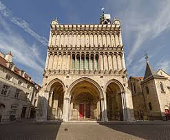
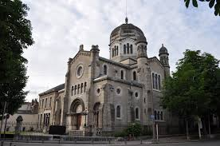
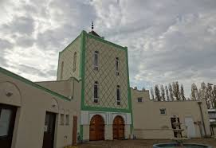

Dijon est une commune française, préfecture du département de la Côte-d'Or et chef-lieu de la région Bourgogne-Franche-Comté. Elle se situe entre le bassin parisien et le bassin rhodanien, sur l'axe Paris-Lyon-Méditerranée, à 310 kilomètres au sud-est de Paris et 190 kilomètres au nord de Lyon.
Ses habitants, appelés les Dijonnais, étaient au nombre de 155 090 en 2016. L'unité urbaine, qui comptabilisait pour sa part 243 376 habitants, est la première agglomération de la région en nombre d'habitants. Elle est au centre d'une intercommunalité, Dijon Métropole, comprenant 23 communes et 251 897 habitants et d'une aire urbaine de 385 400 habitants.
Capitale historique du duché de Bourgogne, ville aux cent clochers sous l'Ancien Régime, héritière d'un riche patrimoine historique et architectural, Dijon est une cité touristique dont l'attrait est renforcé par la réputation gastronomique de la région. Le centre historique de la ville est la seconde composante des climats du vignoble de Bourgogne, inscrits depuis le 4 juillet 2015 au patrimoine mondial de l'UNESCO.
Ville de congrès, la capitale bourguignonne est aussi une ville verte au secteur tertiaire important, ainsi qu'un centre économique régional au tissu diversifié, avec un pôle agroalimentaire traditionnel (moutarde de Dijon, crème de cassis de Dijon et kir, pain d'épices, chocolat Lanvin…) et un secteur pharmaceutique réputé.
Dijon est la préfecture de la région de Bourgogne-Franche-Comté, et du département de la Côte-d'Or. La commune se situe à l'extrémité nord de la Côte des vins de Bourgogne aussi nommée « Route des Grands Crus » et qui s'étend de Dijon à Beaune pour sa partie côte-d'orienne.
La capitale bourguignonne se situe au cœur d'une campagne composée de deux rivières convergentes : le Suzon, qui la traverse du nord au sud, et l'Ouche, au sud de la ville ; à l'ouest s'étend la « côte » de vignobles qui a donné son nom au département. Elle se situe à 310 kilomètres au sud-est de Paris, 190 au nord-ouest de Genève et 190 au nord de Lyon.
Située sur un carrefour ferroviaire de l'est de la France (ligne Paris-Lyon-Marseille, bifurcations vers Besançon, Belfort, Nancy, la Suisse, l'Italie (par le tunnel ferroviaire du Fréjus et le Simplon)), la ville est desservie par un des principaux nœuds autoroutiers français aux croisements des autoroutes A6, A31, A36 et A39.
« Dijon prend naissance dans la plaine alluviale du Suzon, creusée dans les argiles tertiaires de la « Plaine » qui s'étend largement à l'est », suivant le cours de la Saône. La plaine est en effet un fossé tectonique situé à une vingtaine de kilomètres de Dijon, remblayé par les marnes et les argiles oligocènes atteignant une hauteur géologique de 100 mètres à Dijon.
Dijon et sa périphérie, formant Dijon Métropole, doit son originalité à une dissymétrie typique, entre les vallonnements diversifiés de l'ouest d'une part (la « côte » de vignobles) et les étendues plates de l'est (plaines de Saône). Au nord le plateau de Langres, dernier rebord du bassin parisien, domine la plaine de 100 à 150 mètres d'altitude. Dijon est donc au centre d'une ligne géographique orientée nord-nord-est/sud-sud-ouest. L'altitude varie de 250 à 500 mètres NGF. Dijon se caractérise par de nombreuses vallées encaissées et le plus souvent étroites (les « combes » aménagées souvent en parcs municipaux comme la Combe aux Fées et la Combe à la Serpent) dont la principale est la vallée de l'Ouche au nord-est du plateau. Des buttes résiduelles, ou « tasselots » dans le patois dijonnais, forment le site des bourgs de Talant et de Fontaine-lès-Dijon qui surplombent la ville.
Dijon est donc à la conjonction de trois
La ville de Dijon accueille les sièges de deux principaux médias écrits départementaux que sont Le Bien public Les Dépêches et Dijon l'Hebdo. Le Bien public Les Dépêches, quotidien départemental historique de la Côte-d'Or, existe depuis 1868. Il était tiré à 50 000 exemplaires en 2007, mais la baisse continue de son lectorat ne cesse pas : en 2016, il était tiré à 41 110 exemplaires, dont 36 850 en diffusion totale payée84. Dijon l'Hebdo est un journal gratuit d'informations locales créé en 2013 par Jean-Louis Pierre, ancien patron de Voo Tv, une chaine de télévision subventionnée locale liquidé depuis.
France 3 Bourgogne, antenne locale de la rédaction nationale de France 3 affiliée à France Télévision possède ses studios à Dijon.
Divers autres médias écrits et gratuits sont publiés à Dijon, traitant surtout de l'actualité culturelle. Parmi eux, on peut citer notamment le Journal de Libertés-Culture, mensuel consacré à l'actualité des droits humains ; Magma Magazine, magazine culturel, TV-NET-BOURGOGNE, une web TV culturelle lancée en 2002 par Lionel Vigneron et le magazine trimestriel Sparse depuis octobre 2012.
Les Dijonnais disposent de lieux de culte des principales religions : christianisme, judaïsme, islam.

Le nombre important d'églises catholiques à Dijon traduit la longue histoire du catholicisme dans la ville. Elle remonte, selon la tradition, à saint Bénigne, qui aurait évangélisé Dijon au iie siècle. Sous l'Ancien Régime, les nombreuses églises et chapelles ont valu à Dijon son surnom de ville aux cent clochers.

La communauté juive célèbre le culte israélite selon le rite séfarade, à la synagogue de Dijon, construite de 1873 à 1879.

La communauté islamique de Dijon possède trois mosquées : En-Nour, El-Imân et Al-Kheyr.